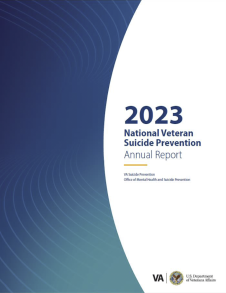

Preventing Veteran Suicide
Suicide is preventable. Here's what we know and what we're doing about it.
Learn More



VA Suicide Preventions
Suicide is complex and there isn't a single solution. That's why everything we do is led by these three principles.
Suicide is preventable.
Suicide prevention requires a public health approach.
Everyone has a role to play.
2023 Anchors of Hope
Our 2023 National Veteran Suicide Prevention Annual Report provides the most recent available data from 2001 to 2021.
Learn how we're preventing Veteran suicide and why it matters.
Suicide prevention efforts must be tailored to the unique needs of Veterans.
Select below to better understand the unique factors, latest suicide prevention efforts and what is next in VA Suicide Prevention.